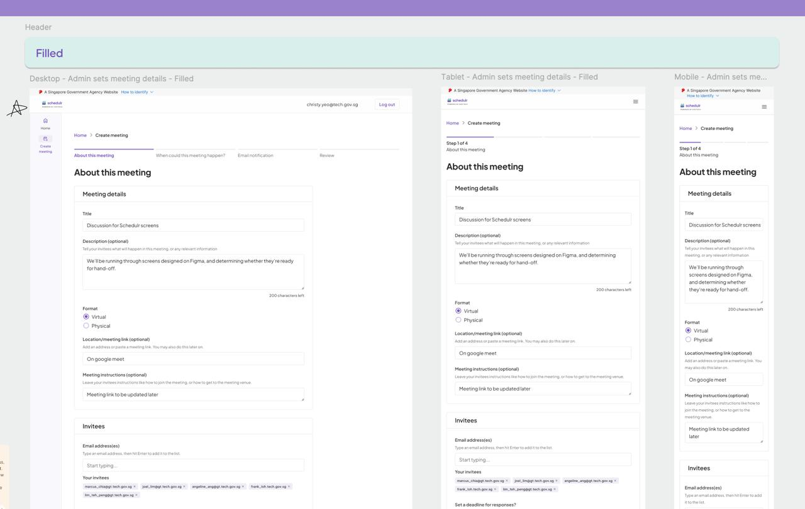

04
Writing & Working with AI
✍️
Writing &
Working with AI
From first-draft collaborator to shared vocabulary —
here's what we learned about getting useful output, consistently.
AI-Assisted Writing
Drafts, copy, and communication
We used AI to draft feature announcements, explore UX microcopy variations,
and write first cuts of stakeholder update emails. The output is consistently fast
and structurally sound. The voice, nuance, and judgment — that's still an edit pass away.
Best results came when we gave it specific context, tone guidelines, and clear constraints.
Lessons Learned
Precise naming and shared language matter
Vague prompts produce vague outputs. When our team aligned on shared language —
consistent component names, user types, workflow stages — AI outputs became
far more relevant and reusable across sessions. The effort we put into naming things
clearly for ourselves translated directly into better AI collaboration.

🤝
Treat AI like a new collaborator joining your team: it needs context, constraints,
and a clear brief. The more specific you are, the more useful it becomes.
AI writes fast. Good writing still takes time — and garbage in, garbage out.